Introduction
Convolutional Neural Network (CNN) to classify CIFAR images
The CIFAR10 dataset contains 60,000 color images in 10 classes, with 6,000 images in each class. The dataset is divided into 50,000 training images and 10,000 testing images. The classes are mutually exclusive and there is no overlap between them.
Import Data
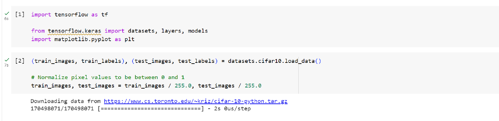Verify the data
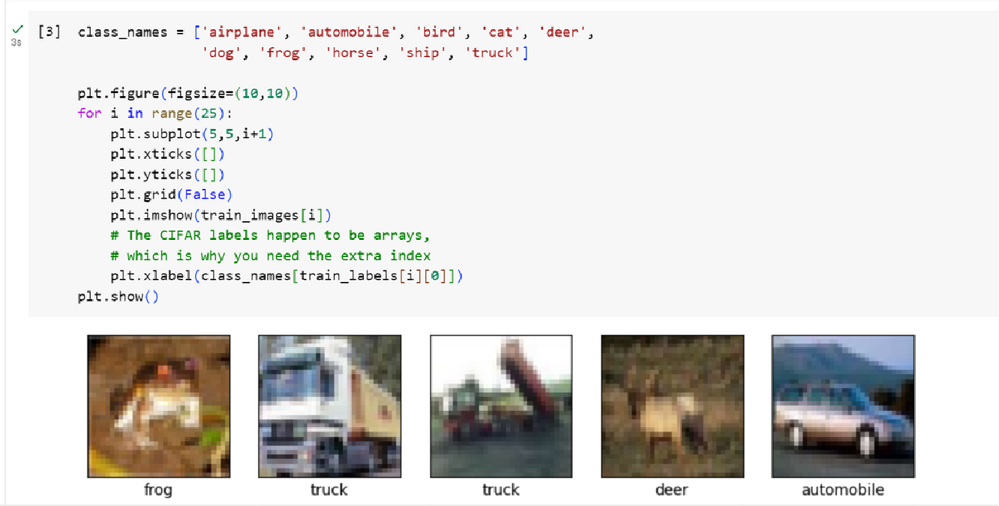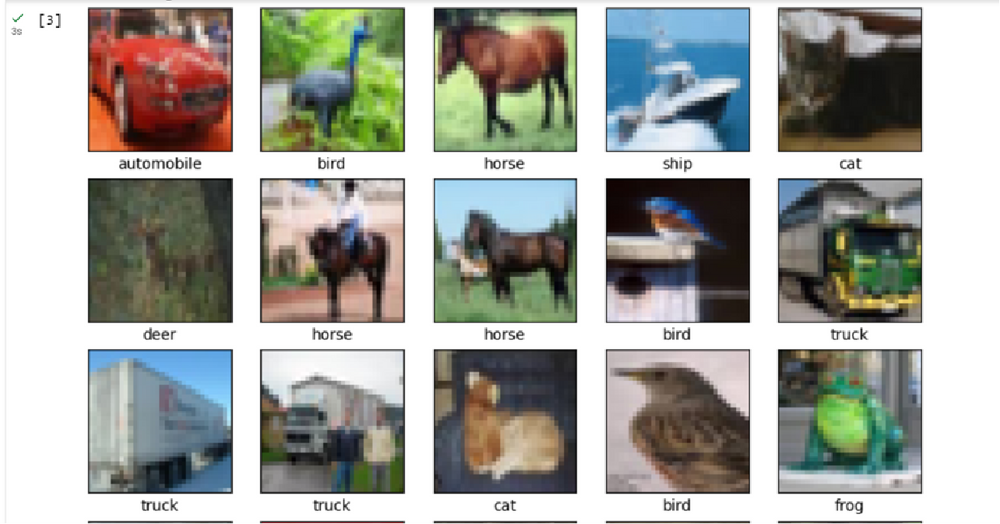
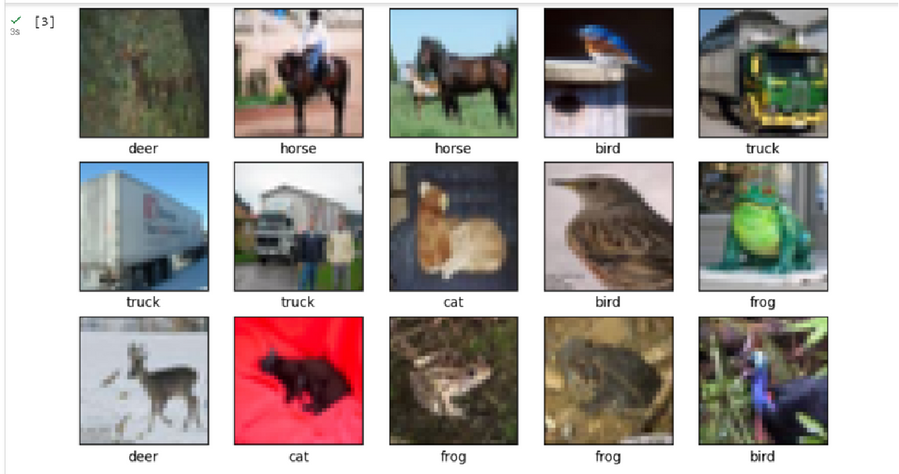
Create the convolutional base
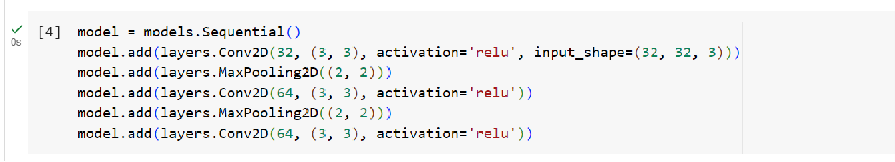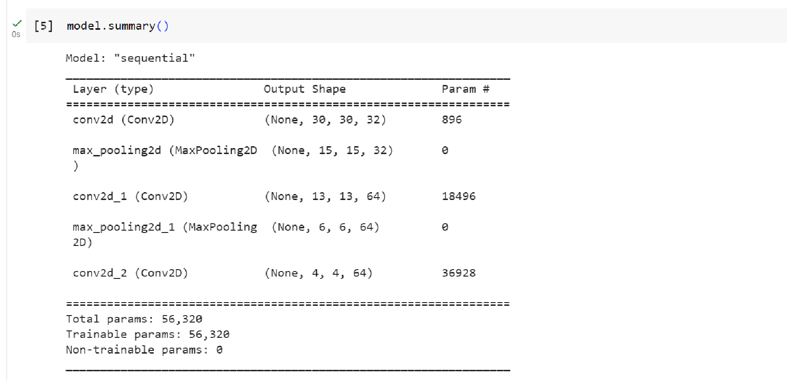Add Dense layers on top
Figure
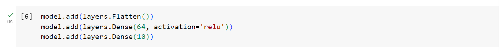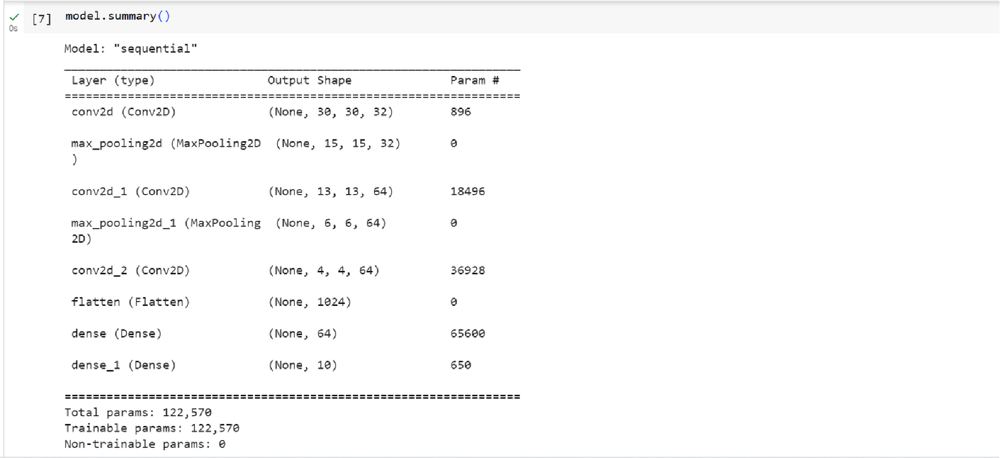Compile and train the model
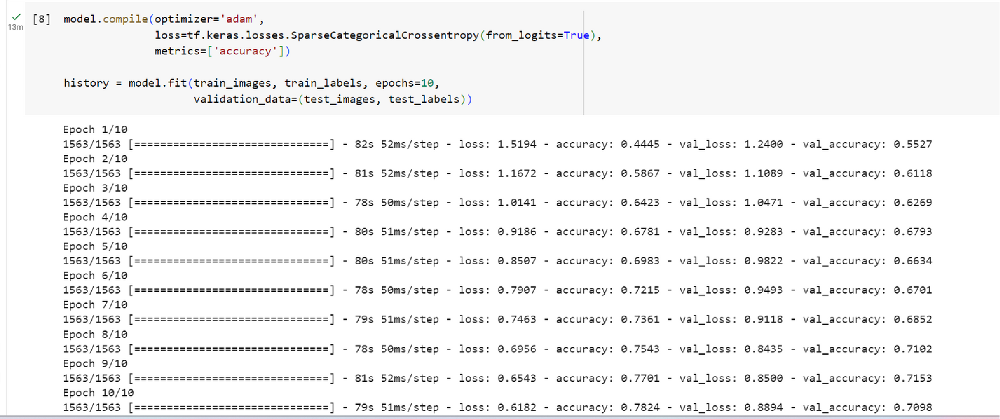Evaluate the model
Figure
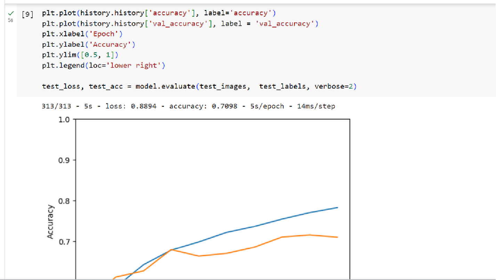Figure
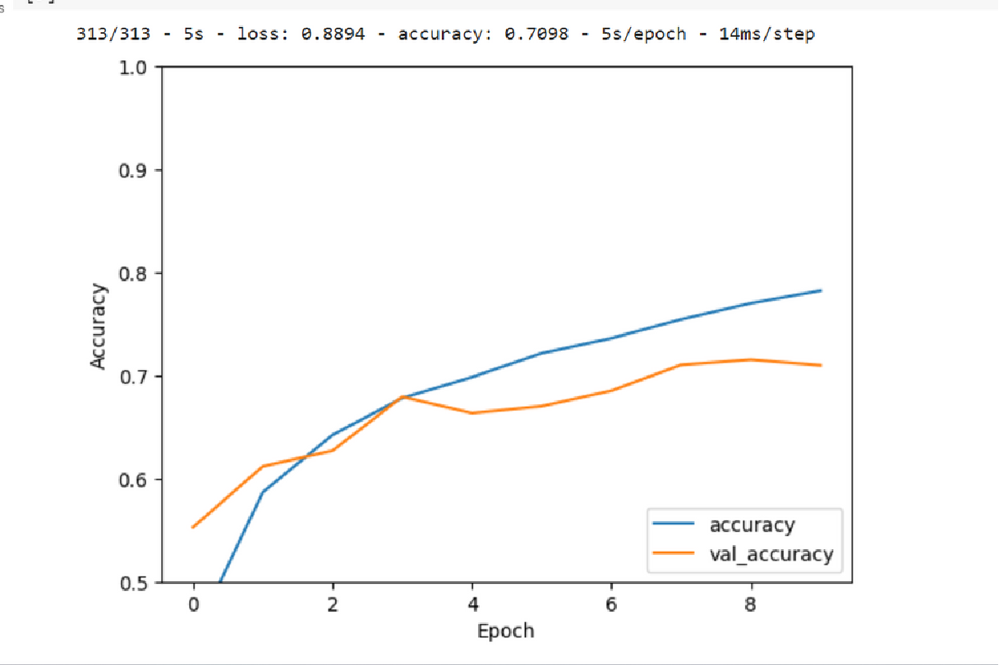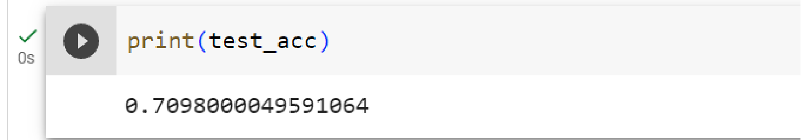To go places and do things that have never been done before – that’s what living is all about.Scenarios where deep learning can be applied and where our implementation could be useful:
- Object Detection and Recognition - can be used for object detection and recognition in images and videos. This technology has applications in self-driving cars, surveillance systems, and robotics.
- Recommendation Systems - it can analyze user behavior and preferences to make personalized recommendations. This is commonly used in e-commerce platforms, streaming services, and social media platforms.
- Healthcare - it can assist in medical diagnosis, disease prediction, drug discovery, and medical imaging analysis. They can help in detecting diseases from medical images, analyzing genomic data, and predicting patient outcomes.
THAT'S ALL THANK YOU!.